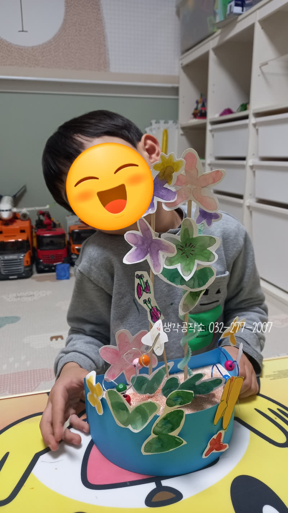
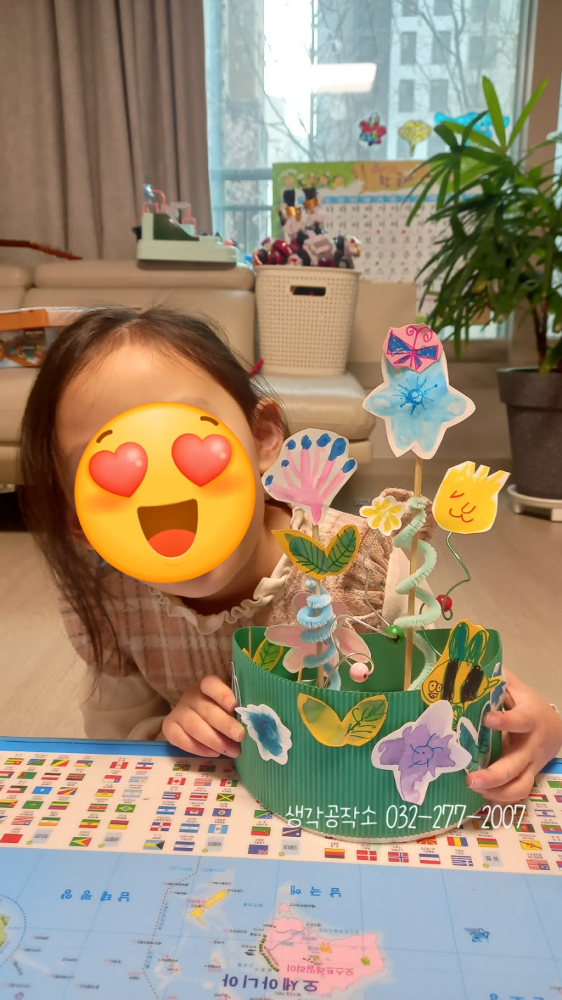
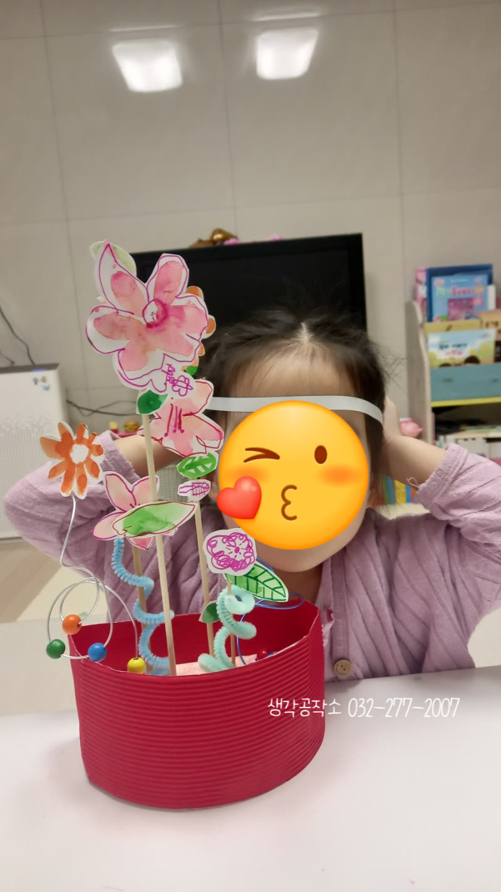
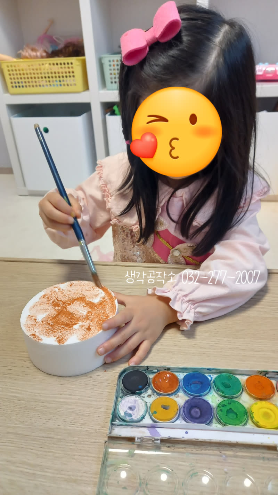
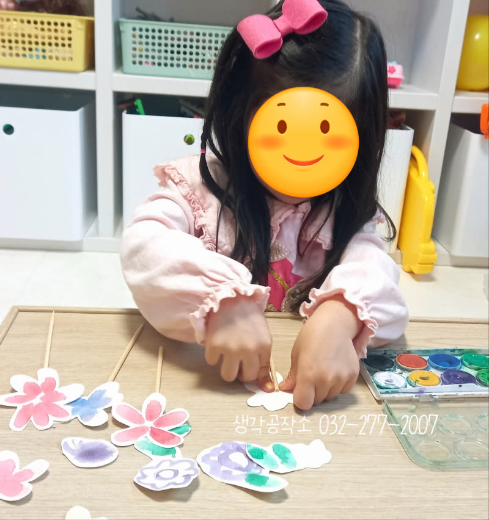
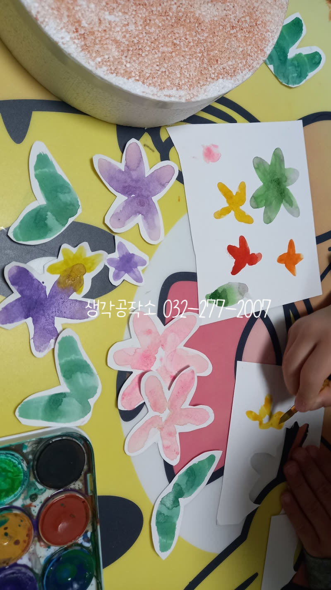
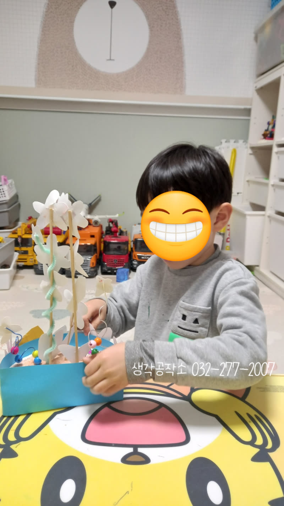
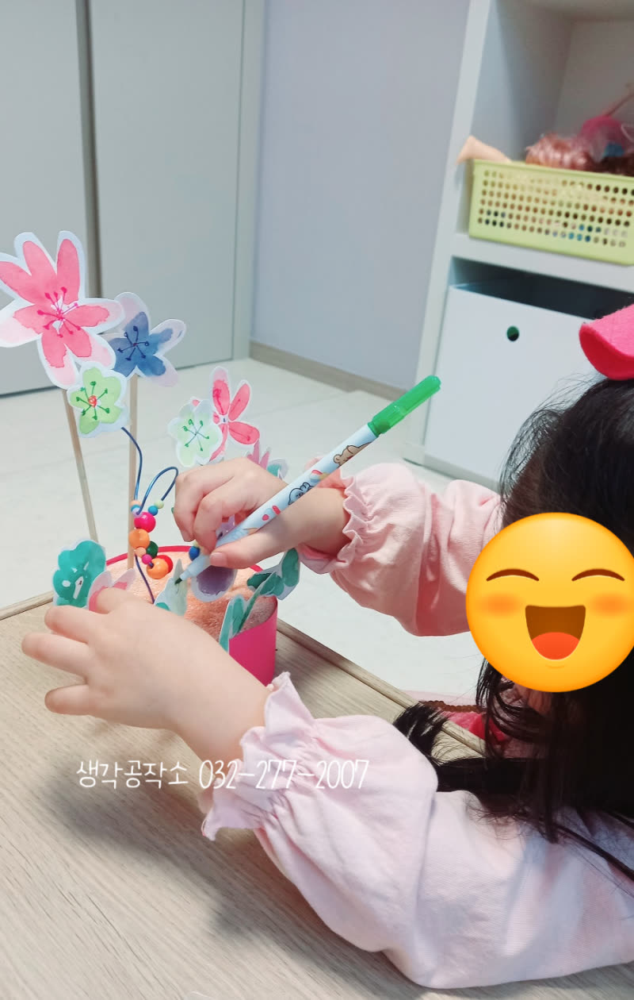
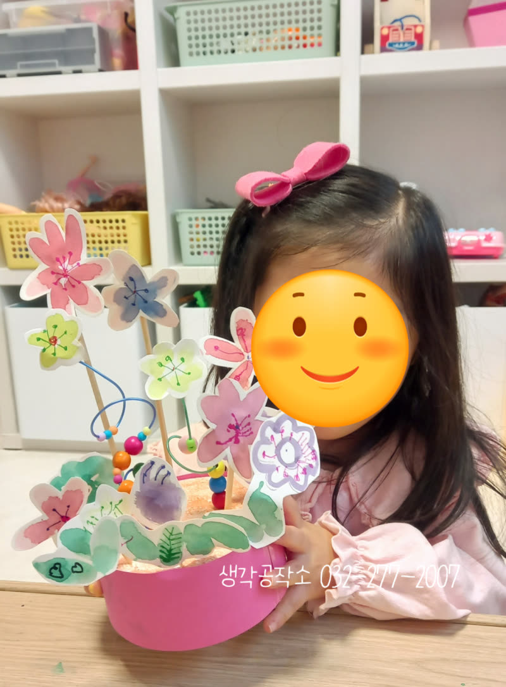

알록달록 아이들의 작은 손에서 완성된 아름다운 '봄 정원 꾸미기'
안녕하세요, 생각공작소 입니다. :)
싱그러운 봄날,
우리 아이들과 함께 봄 정원 꾸미기 프로그램을 진행했습니다!
아이들의 마음에 따뜻한 봄을 담고,
작은 손으로 아름다운 정원을 만들어가는 특별한 시간이었답니다. 🌸🌼



아이들은 먼저, 봄에 관한 아름다운 동화를 들으며
마음속에 예쁜 봄 풍경을 그렸습니다.
이야기가 주는 따스함이 아이들의 마음을 촉촉하게 적시는 듯했습니다. 📖✨
도화지에 흙색 물감으로 바탕을 칠하고,
그 위에 아이들이 직접 만든 꽃들을 심어 나만의 정원을 꾸미기 시작했습니다.



붓에 여러 색의 물감을 섞어
꾹꾹 눌러 찍어 만든 꽃잎들은
정말 신비롭고 오묘한 색을 띠었는데요.
아이들도 그 모습이 신기한 듯 눈을 반짝였습니다. ✨
정성껏 오려낸 꽃들을 심는 아이들의 모습은 마치 작은 정원사 같았습니다. 🌷🌱



와이어에 알록달록 구슬을 끼워 탐스러운 열매도 만들며
아이들의 얼굴에는 웃음꽃이 피어났습니다. 🍇🍓🍎
아이들은 완성된 자신의 작품을 보며 "내 작품 어때요? 정말 멋지죠!" 라고 외치며
성취감과 자존감이 뿜뿜 솟아나는 모습을 보여주었습니다. 👍😊
아이들이 작은 손으로 가꾼 봄 정원처럼,
오늘 아이들의 마음속에도 따뜻한 봄 기운이 가득 피어났을 것입니다.
동화를 통해 감성을 채우고,
직접 만들고 표현하는 미술 활동을 통해 창의력과 미적 감각을 키웠습니다.
자신만의 아름다운 정원을 완성하며 '나도 할 수 있다'는 큰 성취감과 더불어 자존감도 쑥쑥 높아졌습니다.
오감쑥쑥 서비스가 우리 아이들의 즐거운 성장에 든든한 밑거름이 되도록,
저희 생각공작소가 아이들의 오감을 깨우는 행복한 경험들을 계속 만들어가겠습니다! 🙌
인천시 남동구, 연수구, 미추홀구, 서구 에 위치한 #심리상담센터 로
전연령층과 전직종을 대상으로 #심리상담 을 도와주는 곳입니다. :)
평생을 미술치료와 심리상담에 종사하신 소장님과
실력과 경험 많은 상담사들이 당신을 기다리고 있습니다.
더욱 자세한 정보는 문의를 통해 확인해주세요 :)
T. 032-277-2007